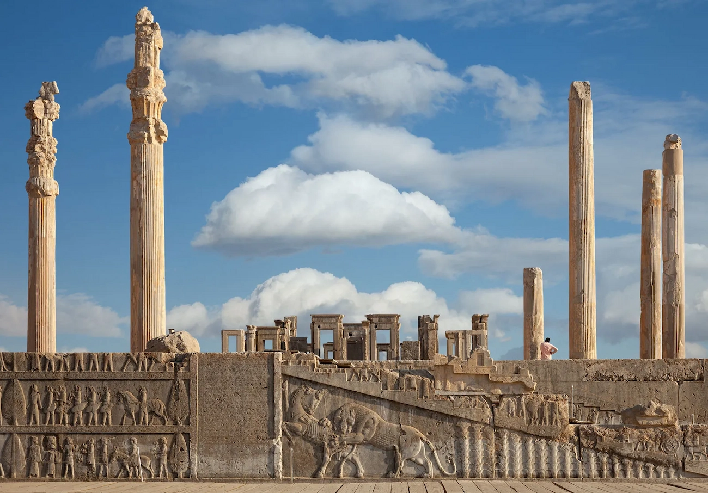

01
Persepolis
Location: Marvdasht, Fars Province, Iran.
Persepolis was the ceremonial capital of the Achaemenid Empire (c.550 - 330 BC). It is situated in the plains of Marvdasht, encircled by the southern Zagros Mountains. It is one of the key Iranian cultural heritage sites and a UNESCO World Heritage Site. Founded by Darius I around 518 BCE, Persepolis became the ceremonial capital of the Achaemenid Empire. The city was later burned and partly destroyed during Alexander the Great’s conquest in 330 BCE, leaving the impressive ruins we see today.
View on Google Earth